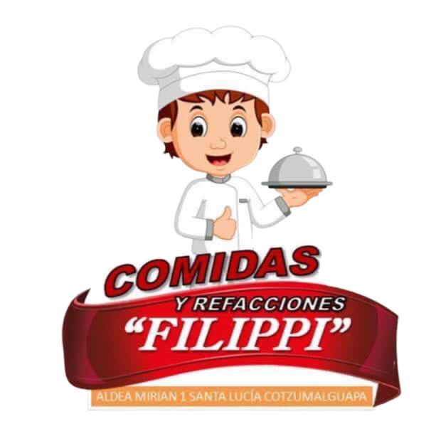

Nuestro servicio es tipo bufé,
incluye, platos de loza, cubiertos formales,
mantelería, vasos de cristal, picheles, refresco natural
y personal para atender el evento. sillas y mesas en el
área de Santa Lucia Cotz.
Ven y disfruta de los mejores precios.